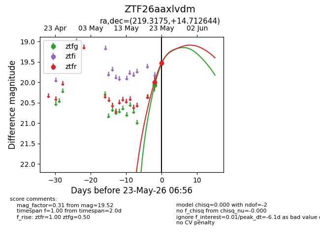
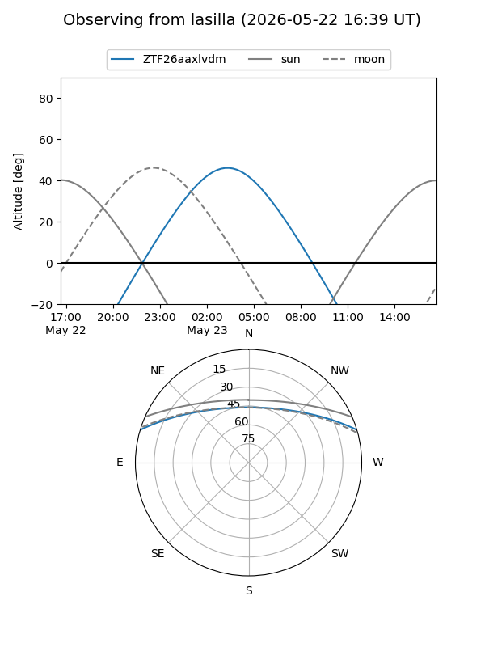
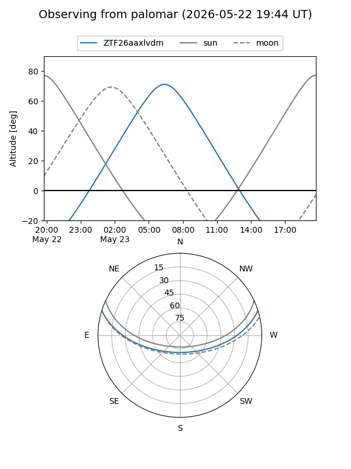
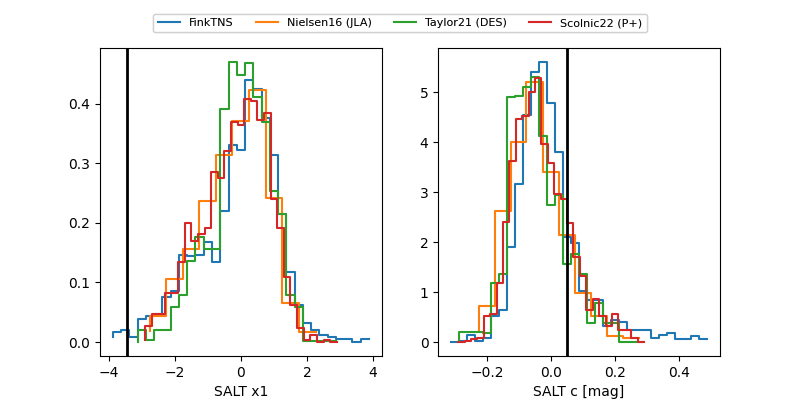

ZTF26aaxlvdm
Target ZTF26aaxlvdm at 2026-05-23 06:57
Aliases and brokers:
lsst-FINK: link
lsst-Lasair: link
lsst-ALeRCE: link
ztf-FINK: link
ztf-Lasair: link
ztf-ALeRCE: link
alt names
ZTF26aaxlvdm (ztf,fink_ztf)
Coordinates:
equatorial (ra, dec) = 219.3175,+14.71264
equatorial (HMS+DMS) = 14:37:16.21,+14:42:45.52
galactic (l, b) = (11.5404,+62.43093)
Flags:
Photometry:
last ztfg=20.07, ztfr=19.52
1 ztfg, 2 ztfr detections
Lightcurve

Visibility


Additional plots
